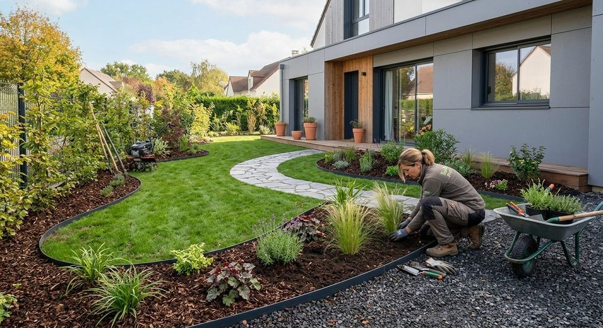

À propos
Une vie autour du végétal
Avis Vert met au service des jardins un parcours de terrain, de la pépinière à la direction de la production.

Le parcours
Du pépiniériste au directeur adjoint
- Une formation de pépiniériste, puis la découverte du monde des jardins.
- Plusieurs années de terrain, avec la conduite de travaux de projets majeurs et haut de gamme en région parisienne.
- Le poste de directeur adjoint en charge de la production, dans une équipe d’une cinquantaine de collaborateurs.
Ce que cela change pour vous
- Les techniques paysagères maîtrisées sur le terrain
- L’organisation des travaux : économie, qualité, aspects humains
- L’amour du travail bien fait, que Avis Vert partage avec vous
Valeurs fondatrices
Le jardin, un lien avec le vivant
Aimer le vivant
Au-delà de l’esthétique, le jardin nous relie au vivant.
Observer et comprendre
Éveiller son regard sur les systèmes vivants du jardin, pour être acteur de son évolution.
Réfléchir à l’impact
Avant tout aménagement : échanger sur les méthodes les moins intrusives et choisir les matériaux les mieux adaptés.
Prendre le temps long
Le temps long et la résilience permettent au jardin de s’exprimer pleinement et d’y construire une relation sereine.
Faisons connaissance
Un projet de jardin ou un chantier à suivre ? Appelez ou écrivez à Avis Vert.